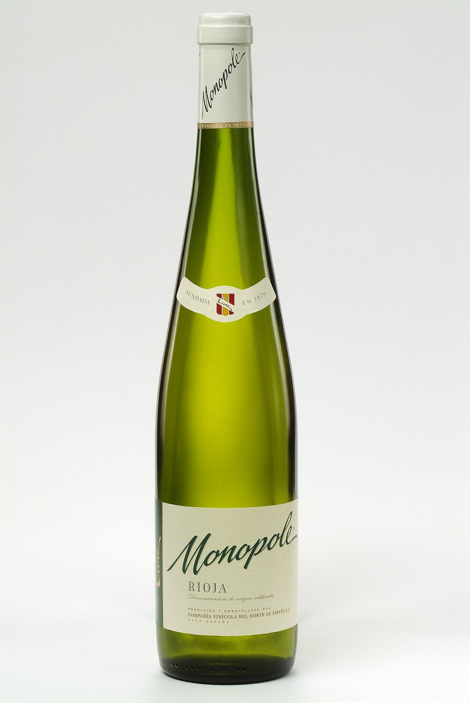

EFFERVESCENT
Cépage blanc polyvalent, appelé viura dans la Rioja, base du cava avec le xarel·lo et le parellada, présent aussi en Roussillon sous le nom de macabeu.

Le macabeu, appelé macabeo en Espagne, est un cépage ancien du nord-est de l’Espagne, probablement originaire de Catalogne ou d’Aragon, d’où il s’est répandu le long de la vallée de l’Èbre et jusqu’en Roussillon. Dans la Rioja et en Navarre, il porte le nom de viura.
Il débourre tardivement, ce qui le protège des gelées de printemps, et mûrit tard. Productif, il a de grosses grappes compactes, sensibles à la pourriture grise et au mildiou. Il s’adapte aux climats chauds et secs et donne, à rendement maîtrisé, des vins de plus de caractère. Ses moûts ont tendance à s’oxyder et demandent du soin en cave.
Les vins jeunes de macabeu sont pâles, légers à moyennement corsés, à l’acidité modérée et aux arômes discrets de fruits blancs, de fleurs et d’amande. Son caractère neutre le rend très adapté aux effervescents : dans le cava, il apporte fraîcheur et fruit et compte parmi les trois cépages traditionnels. Dans la Rioja, la viura donne des blancs jeunes comme des blancs traditionnels longuement élevés en barrique, de grande garde, aux notes de fruits secs, de miel et de cire. Bien vinifié, il peut développer une remarquable complexité.
C’est l’un des cépages blancs les plus plantés d’Espagne. Il s’illustre dans le Penedès et la D.O. Cava, dans la Rioja et en Navarre, à Costers del Segre, Conca de Barberà, Somontano, Cariñena, Calatayud, Campo de Borja, dans la Manche et à Valence. En France, le macabeu est cultivé en Roussillon et en Languedoc, où il entre dans des blancs secs et des vins doux naturels comme le rivesaltes. Hors de ces deux pays, il est rare.
Le viura est le cépage blanc le plus planté de la Rioja, et dans les blancs de la Rioja il est souvent assemblé à la malvasía riojana et au grenache blanc. En Roussillon, il entre régulièrement dans les assemblages des blancs secs de la région.
Les blancs jeunes de macabeu accompagnent l’apéritif, les salades, les poissons et les légumes, et les effervescents dont il fait partie conviennent à une grande variété de plats. Les viuras de la Rioja longuement élevées appellent poissons en sauce, volailles et fromages affinés.

